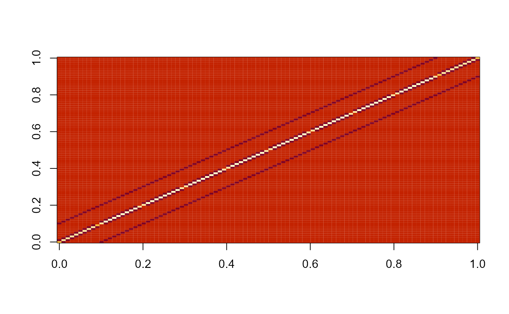
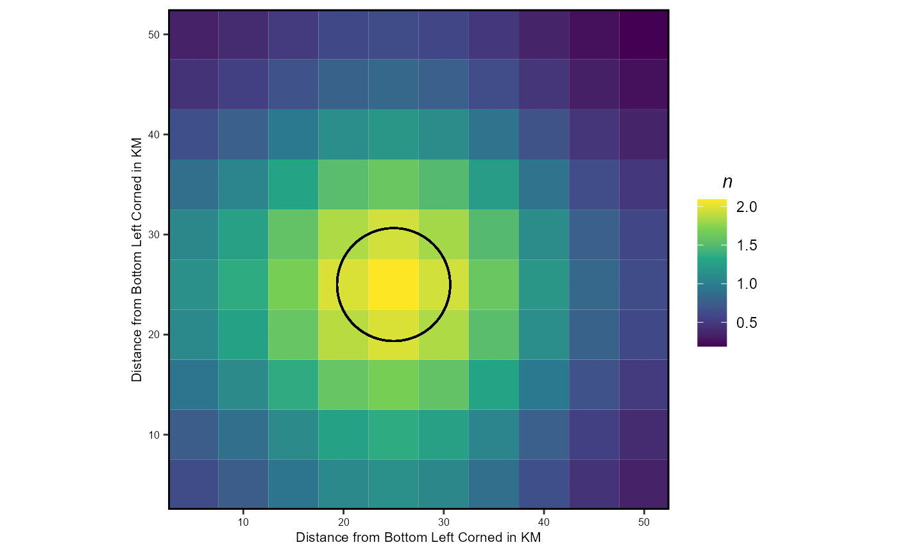
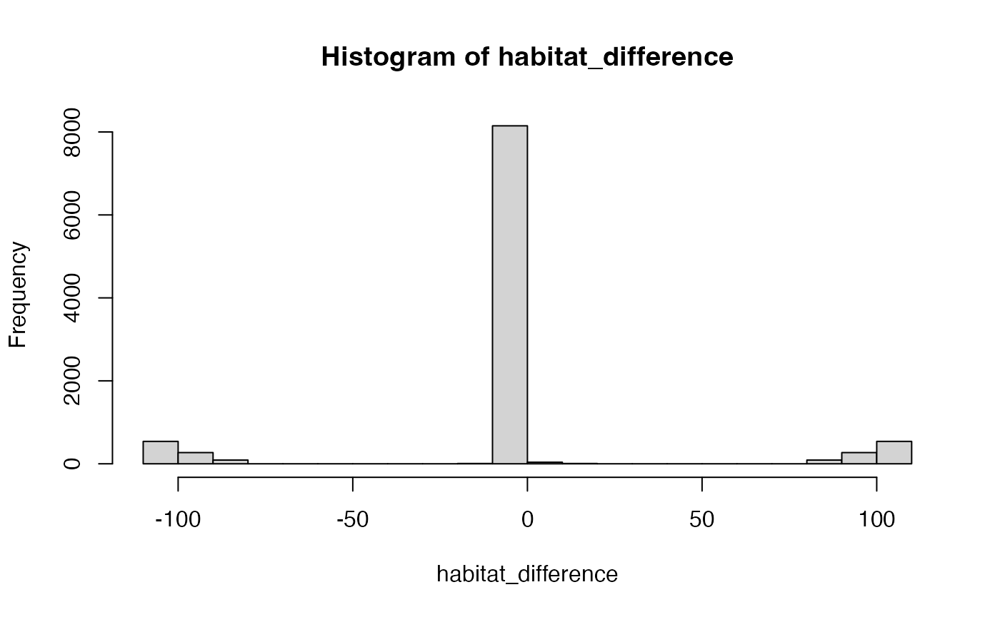
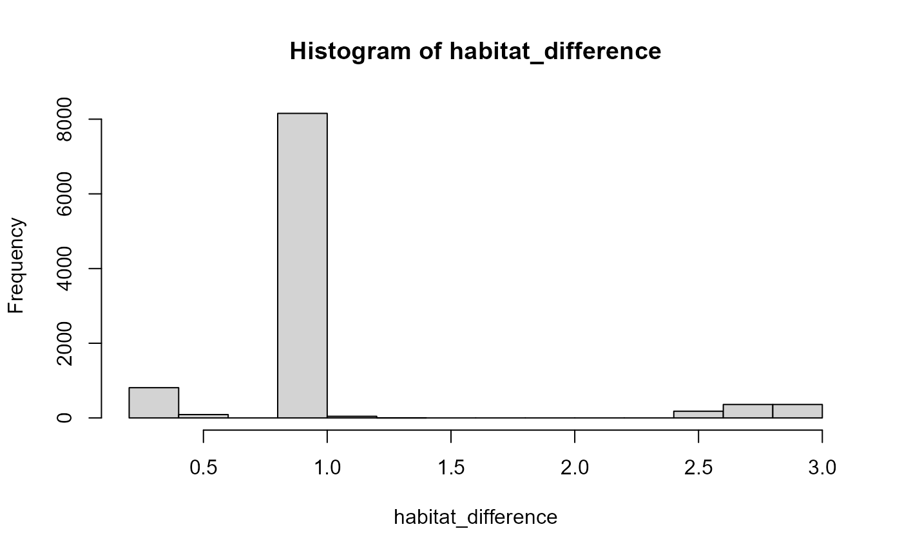
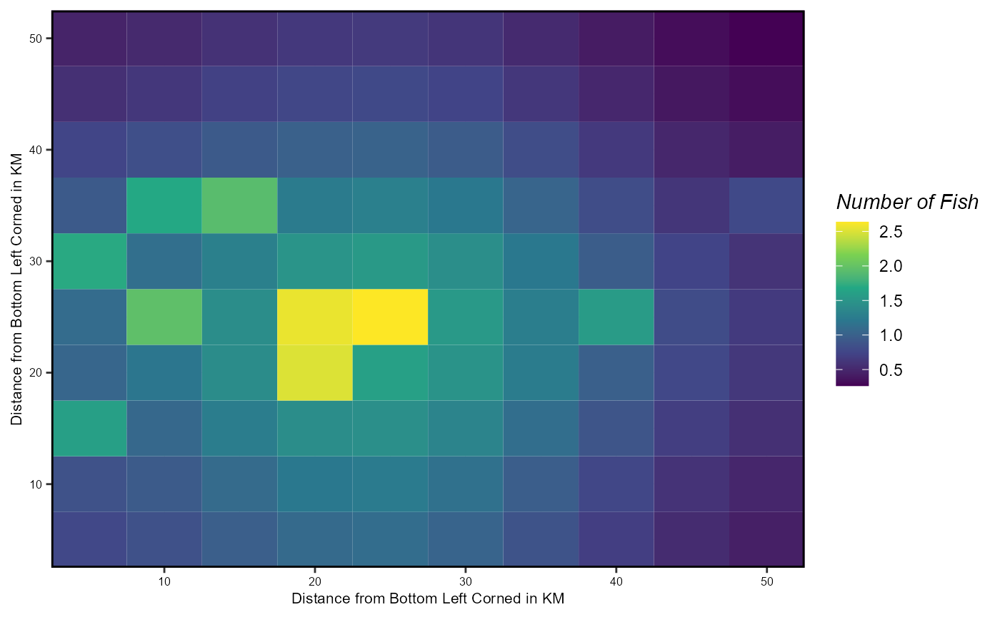

library(marlin)
library(ggplot2)
library(ggforce)
#> Warning: package 'ggforce' was built under R version 4.2.3
theme_set(theme_marlin(base_size = 8))marlin’s movement dynamics are based on a
continuous-time Markov chain (CTMC), as described in Thorston
et al (2021). The advantate of the CTMC model is that it allows for
movement to be broken down into three components of advection
(drifting with currents), taxis (active movement towards
preferred habitat), and diffusion (essentially remaining
variation in movement not explained by advection or taxis). For now,
marlin focuses just on the diffusion and taxis components
of this model, assuming that advection is zero, though future extensions
could easily incorporate advection vectors from oceanographic models. In
this way, marlin allows users to run anything from a simple
Gaussian dispersal kernel up to a system governed by species that
passively diffuse out from a core habitat defined by a dynamic thermal
range.
Details
marlin’s movement dynamics are based on a
continuous-time Markov chain (CTMC), as described in @thorson2021a. Within this framework, the model
allows for movement to be broken down into three components of
advection (drifting with currents), taxis (active
movement towards preferred habitat), and diffusion (essentially
remaining variation in movement not explained by advection or taxis).
For now, marlin focuses just on the diffusion and taxis
components of this model, assuming that advection is zero, though future
extensions could easily incorporate advection vectors from oceanographic
models. In this way, marlin allows users to run anything
from a simple Gaussian dispersal kernel up to a system governed by
species that passively diffuse out from a core habitat defined by a
dynamic thermal range.
We provide a brief overview of the the general CTMC method here (see @thorson2021a for a detailed description). Under this framework, movement of individuals from each patch to each other patch in the system in a given timestep t for life stage a of species s is defined by a movement matrix \(\pmb{M}_{t,s,a}\). \(\pmb{M}_{t,s,a}\) is calculated as a function of diffusion \(\pmb{D}\) and taxis \(\pmb{\tau}\) matrices scaled by the width of the time step \(\Delta_{t}\) and the length of the edge of each patch \(\Delta_d\) that the model is running under. This parameterization allows users to set the effective area of the spatial domain through two avenues; the number of patches, which effectively scales the resolution of the model, and the area of each patch, which scales the spatial extent of the simulation.
The individual components (M) of the movement matrix (\(\pmb{M}\)) are filled based on an adjacency matrix, which defines whether two patches are both adjacent and water (as opposed to land or another physical barrier), a diffusion rate \(D\) defined in units of area of a patch per unit of time, and a habitat preference function H in units of length of a side of a patch per unit time. For example, if we are defining the time units as years and the distance units as kilometers, for a tuna \(D\) might be 1,000 \(\frac{KM^2}{Year}\). We then use parameters \(\Delta_{t}\) and \(\Delta_{d}\) parameters to translate the diffusion rate \(D\) to match the time step and patch size used in a simulation. For example, if we were to run a model on a monthly timestep given time units of years, then \(\Delta_{t} = 1/12 years\). If one square patch in the simulation has an area of 100km2, then \(\Delta_d = 10KM\). This “scale free” parameterization means that appropriate value of \(D\) can be identified for a species and then set, regardless of the time step or patch size used in the simulation model itself. The taxis component of the movement process is a function of the difference in habitat quality H. The habitat preference function itself can take any form the user wishes. Exponentiating the difference in the habitat preference function between patches turns the taxis matrix into a multiplier of the diffusion rate D. As such, when creating habitat layers for simulation, users can tune the scale of the habitat gradient function to result in realistic multipliers of the diffusion rate. This parameterization ensure that the off-diagonal elements of the movement matrix \(\pmb{M}_{t,s,a}\) are all non-negative, a requirement of the CTMC method.
\[ M_{p1,p2,t,s,a} = \begin{cases} = \frac{\Delta_{t}}{\Delta_{d}^2}De^{\frac{\Delta_t(H(p2,t,s,a) - H(p1,t,s,a))}{\Delta_d}} & \text{if p2 and p1 are adjacent}\\ = -\sum_{p' \neq p1} M_{p1,p2,t,s,a} & \text{if p1 = p2}\\ = 0 & \text{otherwise.} \end{cases} \] {#eq-diffusion}
For both the diffusion and taxis matrices, we allow for the inclusion of physical barriers to movement (i.e. land). Pairs of patches that are adjacent but in which one or both patches are a barrier to movement are set as non-adjacent. The CTMC model then produces movement dynamics that move around barriers rather than over them. This is different than setting habitat in a patch to zero; an animal will not preferentially move towards a patch with zero habitat all else being equal, but can move over a patch with zero habitat towards another better patch. An example might be a species that lives and feeds on coastal habitats transiting through a patch of open ocean to reach a new feeding ground. In contrast, a physical barrier represents something like a peninsula that an animal must move around to transit from one side to another.
The movement of individuals across patches is then calculated by matrix multiplication of the pre-movement vector of the number of individuals (\(\pmb{n}\)) of species s at age a in time step t across all patches p times the matrix exponential of the movement matrix \(\pmb{M}\)
\[ \pmb{n}_{t+1,s,a} = \pmb{n}_{t,s,a}e^{\pmb{M}_{t,s,a}} \] {#eq-movement}
Setting Movement Parameter Values
One of the advantages of the CTMC method is that it’s parameters can in theory be estimated from data. However, in many cases users will not have the resources to directly estimate movement parameters, and will need to decide on logical values on their own.
Movement enters marlin in two ways; through the dispersal parameter \(D\) and the ratio of habitat gradients. Let’s focus first on setting up the dispersal parameter. \(D\) is in units of time / distance2. So if one was running a model using time units of years and distance of km^2, \(D\) might be 100km^2/yeark meaning that a fish can diffuse over an area of 100km2 over the span of a year. Values of \(D\) can then be set through literature review or best judgement given the species in question.
Once we have set \(D\),
marlin then estimates the correct diffusion matrix given
the spatial and temporal resolution of the simulation itself.
Let’s set
- a 10x10 simulation grid
- width of a square cell side \(\Delta_d\) of 5km
- a time step \(\Delta_t\) of one year
- a diffusion parameter D of 100 km2/year
While we could run this through marlin, we’re going to
actually step through the calculations here so readers can get a sense
for what is actually happening in the model.
resolution <- 10 # cells per side
patches <- resolution^2 # number of patches
delta_d <- 5 # length of a cell side in km
patch_area = delta_d^2 # in units of km^2/patch
simulation_area <- patch_area * patches
delta_t = 1 # length of one time step in the simulation in units of years
D <- 100 # km^2 / yearWe’re now going to set up an “adjacency matrix”. This is a patches x patches dimension matrix that has a 1 if two patches are adjacent to each other, and a 0 if not.
grid <- tidyr::expand_grid(x = 1:resolution, y = 1:resolution)
adjacent <- grid |>
dist() |>
as.matrix()
# Mark adjacent cells
adjacent[adjacent != 1] <- 0
image(adjacent)
We’ll now fill in the diffusion matrix, using \(D\), \(\delta_t\) and \(\delta_d\) to translate the diffusion parameter into the correct units.
See Thorson et al. (2021) for details of the math here if you’re interested.
The net result of this step is we create an instantaneous diffusion matrix that will then be used to calculate the total diffusion probabilities over a discrete amount of time using matrix exponentiation.
diffusion_matrix <- adjacent * D * (delta_t / delta_d^2) # adjacent times diffusion rate times simulation units
# fill in diagonal
diag(diffusion_matrix) <- -1 * colSums(diffusion_matrix)
# ensure matrix class
diffusion_matrix <- as.matrix(diffusion_matrix)
image(diffusion_matrix)
Now, we’ll use this diffusion model to simulate ths diffusion of some critters from a central patch to the patches around it.
# put some animals in around the center
D_patches <- D / patch_area # translate diffusion into units of patches / year
D_patches_side <- sqrt(D_patches) # side of the diffusion box
n <- rep(0, patches)
n[grid$x == resolution / 2 & grid$y == resolution / 2] <- 100 # add 100 critters to the rough center
ytmp <- as.matrix(expm::expm(diffusion_matrix))
ytmp[ytmp < 1e-3] <- 0
radius <- sqrt( D / pi)
n_next <- n %*% as.matrix(expm::expm(diffusion_matrix)) # calculate the realized diffusion over one time step of the model
grid$n <- as.numeric(n_next)
grid |>
ggplot() +
geom_tile(aes(x * delta_d, y * delta_d, fill = n)) +
ggforce::geom_circle(aes(
x0 = resolution / 2 * delta_d,
y0 = resolution / 2 * delta_d,
r = radius
)) +
scale_fill_viridis_c(limits = c(0, NA)) +
scale_x_continuous(name = "Distance from Bottom Left Corned in KM", expand = c(0,0)) +
scale_y_continuous(name = "Distance from Bottom Left Corned in KM", expand = c(0,0)) +
coord_fixed()
Adding in Habitat Preference through Taxis
The taxis matrix is a function of a habitat function, which must return habitat values in the same units as the distance, in this case km / year.
Taxis is in marlin is modeled in terms of
difference in habitat preferences. However, this
produces a complication. In order for the CTMC model to work the
component movemenet matrices must be “Metzler matrices”, defined as a
matrix where all the off-diagonal elements are non-negative.
So, simply adding a taxis matrix to a diffusion matrix can produce negative off-diagonal elements if the values of the taxis matrix are much greater than the diffusion matrix.
To get around this, we use an alternative parameterization of CTMC in which the habitat gradient produces a multiplier of the diffusion rate. This has two advantages. First, it ensures that the resulting movement matrix will not have negative off-diagonal elements and secondly, it makes it a bit easier to set the scale of the habitat gradient.
As parameterized, the differences in habitat gradient, whether measured in linear or log space, get exponentiated and then multiplied by the diffusion rate D. This means that the absolute scale of the habitat gradient matters less than the scaled of their logged differences. So, when generating simulated habitat layers, you can keep the dynamics sane by thinking about values that would produce habitat multipliers that make sense
If you’re simulating a scallop with a diffusion rate of 0.1km2/year, it doesn’t make much sense to use a habitat gradient function with a range of 0 to 100, which would produce a taxis multiplier of exp(100-0) roughly 2e43 KM, meaning you’ve got scallops flying through space every year.
One trick is to then once you’ve generated a habitat gradient that you like the overall shape of is to rescale it so that the scale of the differences makes sense.
Let’s set up some habitat to see this in action. Suppose that I think that the most a critter could move towards desirable habitat is three times the diffusion rate.
First, let’s just set up some arbitrary habitat
habitat <- rep(0, patches)
reefs <- sample(1:patches,10)
habitat[sample(1:patches,10)] <- rnorm(10,D,5)
# calculate difference in habitat
habitat_difference = outer(habitat, habitat, "-")
hist(habitat_difference)
The resulting habitat gradient has values as high as 100, which would produce illogical results.
We can use the rescale function in R to get things into
a more reasonable space, where the largest differences in habitat would
produce a taxis multiplier of three
new_habitat <- scales::rescale(habitat, to = c(0, log(3)))
habitat_difference = exp(outer(new_habitat, new_habitat, "-"))
hist(habitat_difference)
Rescaling like this is clearly distoring the ratios of the habitat gradient, and so should only be done if you’re making up habitats for simulation and want something that makes sense; you should not do this to habitat gradients estimated as part of an empircal CTMC model!
Putting it All Together
Putting it all together then, we’ll now use bothe the diffusion and taxis data to simulate movement over one time step of the model
movement_matrix <- adjacent * ((D * delta_t / delta_d^2) * exp((delta_t * habitat_difference) / delta_d))
diag(movement_matrix) <- -1 * colSums(movement_matrix)
grid$n <- as.numeric(as.matrix(expm::expm(movement_matrix)) %*% n)
grid |>
ggplot() +
geom_tile(aes(x * delta_d,y * delta_d,fill = n)) +
scale_fill_viridis_c(name = "Number of Fish", limits = c(0, NA)) +
scale_x_continuous(name = "Distance from Bottom Left Corned in KM", expand = c(0,0)) +
scale_y_continuous(name = "Distance from Bottom Left Corned in KM", expand = c(0,0))